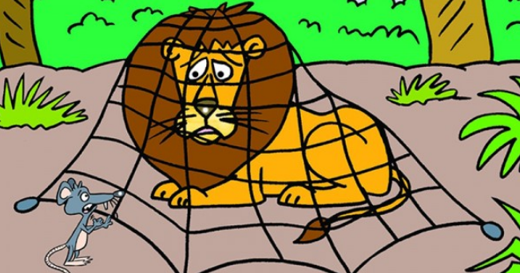

Bahwa seekor tikus sangat jahil dengan singa, di kala singa tersebut sedang tidur siang, sontak membuat singa tersebut marah dan ingin memakan tikus karena merasa terganggu. Sambil meringis ketakutan, tikus tersebut memohon kepada singa agar dilepaskan dan memaafkannya atas kejahilan yang ia perbuat. Singa tersebut merasa iba dan lantas melepaskannya. Si tikus sangat senang, tidak lupa ia berterima kasih dan berjanji tidak akan mengulanginya dan membalas semua kebaikan singa. Pada suatu hari, terdengarlah suara singa yang meraung sangat keras. Ternyata singa tersebut terperangkap di sebuah jaring yang sengaja dipasang oleh pemburu. Singa memohon bantuan pada tikus untuk melepaskannya. Dengan sigap, si tikus pun langsung membantunya agar dapat keluar dari sana dengan cara menggerogoti jaring hingga terputus. Keduanya pun segera berlari dan menyelamatkan diri. Kisah persahabatan dua hewan ini bisa menjadi inspirasi bagi anak untuk selalu berbuat kebaikan dan mengingat semua kebaikan yang kita terima.
 home